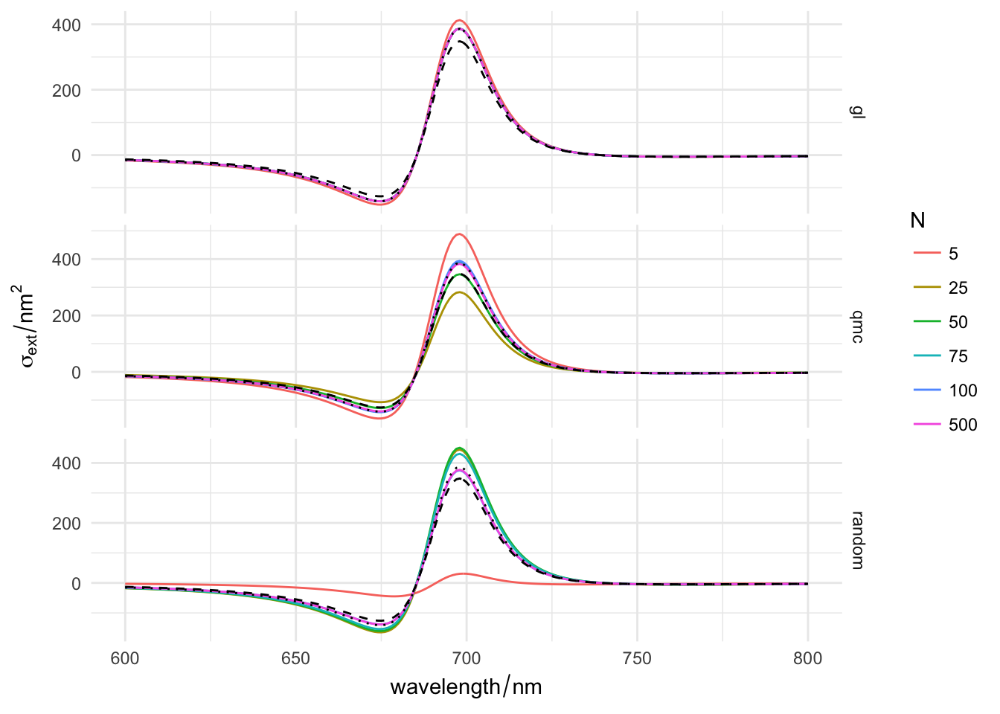

baptiste Auguié – 06 March, 2017
Three options are provided for angular averaging: Gauss-Legendre quadrature, regular grid in (theta, phi), and a quasi-random Monte Carlo sequence on the sphere. Here we compare their performance and accuracy.
gold <- epsAu(seq(600, 800))
cl <- cluster_dimer(d=100,
dihedral=10*pi/180, alpha1=20*pi/180, alpha2=0,
a=35, b=12)
# achiral cluster (plane of symmetry)
cl2 <- cluster_dimer(d=100,
dihedral=0*pi/180, alpha1=20*pi/180, alpha2=0,
a=35, b=12)params <- expand.grid(Nq=c(5, 25, 50, 75, 100, 500),
quadrature=c("gl", "qmc", "random"),
stringsAsFactors=FALSE)
comparison <- mdply(params, spectrum_oa, cluster=cl, material=gold)
cheap <- spectrum_oa(cluster=cl, material=gold, quadrature="cheap")
converged <- spectrum_oa(cluster=cl, material=gold, quadrature="qmc", Nq=1000)
p <-
ggplot(subset(comparison, type == "dichroism" & variable == "extinction"),
aes(wavelength, value)) +
facet_grid(quadrature~., scales="free")+
geom_path(aes(colour=factor(Nq), group=Nq))+
geom_path(data=subset(cheap, type == "dichroism" & variable == "extinction"), linetype=2)+
geom_path(data=subset(converged, type == "dichroism" & variable == "extinction"), linetype=3)+
labs(y=expression(sigma[ext]/nm^2),
x=expression(wavelength/nm), colour=expression(N))
p
The dashed line is a “cheap” version of angular averaging, using only 4 orthogonal directions; it is reasonably close to the converged solution (solid line). QMC seems to perform best in terms of convergence, however, GL may appear more reliable when taking into account symmetry considerations: if a dimer is achiral, the CD signal should be zero. Because QMC uses uneven points on the sphere, it has a harder time at converging towards 0 in such cases.